산림기사 (2015-03-08 기출문제)
1과목: 조림학
1. 우리나라 소나무의 형질개량을 위해 주로 사용된 육종방법은?
- 교잡육종법
- 도입육종법
- 조직배양법
- 선발육종법
(정답률: 84%)

2. 다음 조건에서 1m2당 파종량은?
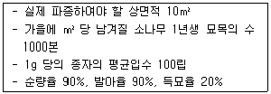
- 약 42g
- 약 52g
- 약 62g
- 약 72g
(정답률: 78%)
3. 다음 중 내음성이 가장 강한 수종은?
- Pinus Koraiensis Siebold & Zucc
- Prunus Yedoensis Matsum
- Chamaecypar is obtusa Endl
- Cephalotaxus Koreana Nakai
(정답률: 53%)
4. 토양층위를 O, A, B, C, R층으로 구분했을 때 빗물이 아래로 침전하면서 부식질, 점토, 철분, 알루미늄 성분등을 용탈하여 내려가다가 집적해 놓은 토양층은?
- O층
- A층
- B층
- C층
(정답률: 79%)
5. 종자를 구성하고 있는 배가 미성숙배라서 후숙이 필요한 수종은?
- 소나무
- 잣나무
- 사시나무
- 은행나무
(정답률: 73%)
6. 다음 보기 수종의 종자를 건조할 때 주로 사용하는 방법은?
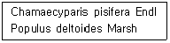
- 인공건조법
- 양광건조법
- 반음건조법
- 자연건조법
(정답률: 69%)
7. 다음 무기영양소 중 수목 내 이동이 상대적으로 어려운 원소는?
- 황, 철
- 칼륨, 구리
- 칼슘, 붕소
- 질소, 마그네슘
(정답률: 73%)
8. 시비량 산출공식(
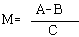
)중 C의 내용은?- 비료의 흡수율
- 비료의 성분비
- 비료 요소의 천연 공급량
- 묘목이 필요로 하는 비료의 요소량
(정답률: 53%)
9. 개벌작업의 장점에 대한 설명으로 옳지 않은 것은?
- 음수 갱신에 유리하다.
- 벌목, 조재, 집재가 편리하고 비용이 적게 든다.
- 작업의 실행이 빠르고 높은 수준의 기술이 필요하지 않다.
- 현재의 수종을 다른 수종으로 바꾸고자 할 때 가장 쉬운 방법이다.
(정답률: 82%)
10. 같은 임지에 있어서 수종과 연령은 같고 밀도만을 다르게 할 때, 임목의 형질과 생산량에 나타나는 현상에 대한 설명으로 옳지 않은 것은?
- 밀도가 높을수록 연륜폭은 좁아진다.
- 밀도가 높을수록 지하고는 낮아진다.
- 밀도가 높을수록 수간형은 완만해 진다.
- 밀도가 높을수록 평균흉고직경은 작아진다.
(정답률: 73%)
11. 소나무류 접목 방법으로 주로 사용하는 것은?
- 절접
- 할접
- 설접
- 아접
(정답률: 81%)
12. 다음 중 가지치기의 시행시기로 가장 적합한 것은?
- 겨울철
- 해빙기 이후
- 이른 가을철
- 봄에서 여름 사이
(정답률: 82%)
13. 접목의 장점으로 옳지 않은 것은?
- 클론보존
- 대목효과
- 개화, 결실의 촉진
- 과간(科間) 접목 가능
(정답률: 66%)
14. 열매의 형태가 삭과에 해당하는 수종은?
- Camellia Japonica L.
- Acer palmatum THUNB
- Quercus acutissima CARRUTH
- Ulmus davidiana var. japonica NAKAI
(정답률: 62%)
15. 종자발아 촉진 방법으로 옳지 않은 것은?
- 환원처리법
- 침수처리법
- 황산처리법
- 고저온처리법
(정답률: 69%)
16. 참나무류 줄기에서 수액상승 속도가 다른 수종에 비해 빠른 이유는?
- 뿌리가 심근성이기 때문이다.
- 도관의 지름이 크기 때문이다.
- 심재가 잘 형성되기 때문이다.
- 잎의 앞면과 뒷면에 모두 기공이 있기 때문이다.
(정답률: 74%)
17. 종자의 배(embryo) 형성에 대한 설명으로 옳은 것은?
- 극핵과 정핵이 만나서 형성된다.
- 난핵과 정핵이 만나서 형성된다.
- 난핵과 조세포가 만나서 이루어진다.
- 정핵과 조세포가 만나서 이루어진다.
(정답률: 84%)
18. 종자가 발아할 때 자엽이 땅속에 남아 있는 수종으로 짝지어진 것은?
- 소나무, 잣나무
- 전나무, 칠엽수
- 밤나무, 호두나무
- 상수리나무, 물푸레나무
(정답률: 73%)
19. 산림작업종에 대한 설명으로 옳은 것은?
- 산림작업종은 크게 풀베기, 가지치기, 제벌, 간벌 등으로 구분 한다.
- 산림작업종 중 간벌작업을 이용해 효과적으로 산림을 갱신시킬 수 있다.
- 산림작업종은 하나의 작업기술 체계로 매년 최대 목재 생산을 목적으로 한다.
- 산림작업종의 분류 기준은 임분의 기원, 벌구의 크기와 형태, 벌채종이다.
(정답률: 69%)
20. 굵은 가지를 생가치지기하면 부후 위험성이 높은 수종으로만 짝지어진 것은?
- 편백, 물푸레나무
- 느릅나무, 물푸레나무
- 느릅나무, 일본잎갈나무
- 자작나무, 일본잎갈나무
(정답률: 68%)
2과목: 산림보호학
21. 곤충 분류로서 유리나방과, 명나방과, 솔나방과를 포함하는 목(目)은?
- Blattaria
- Hemiptera
- Plecoptera
- Lepidoptera
(정답률: 75%)
22. 다음 중 목질부를 천공하여 피해를 주는 것은?
- 솔나방
- 미끈이하늘소
- 미국흰불나방
- 잣나무넓적잎벌
(정답률: 76%)
23. 지표를 배회하는 성질을 가진 곤충 채집 방법으로 효과적인 것은?
- 유아등(light trap)
- 수반트랩(water trap)
- 핏폴트랩(pitfall trap)
- 말레이즈트랩(Malaise trap)
(정답률: 65%)
24. 낙엽송 잎떨림병에 대한 설명으로 옳지 않은 것은?
- 자낭균에 의한 병해이다.
- 병징은 3월에 가장 뚜렷하다.
- 4-4식 보르도액을 살포하여 방제할 수 있다.
- 피해 수목은 수관 하부에서부터 적갈색을 나타낸다
(정답률: 57%)
25. 곤충의 일반적인 형태 설명으로 옳지 않은 것은?
- 소화관은 전장, 중장, 후장으로 나뉜다.
- 앞날개는 앞가슴에 뒷날개는 뒷가슴에 부착되어 있다.
- 가슴은 앞가슴, 가운데가슴, 뒷가슴으로 구성되어 있다.
- 다리마디는 밑마디, 도래마디, 넓적마디, 종아리마디, 발마디로 구성되어 있다.
(정답률: 73%)
26. 종실을 가해하는 해충으로만 짝지으진 것은?
- 과실파리, 깍지벌레류, 진딧물류
- 애기잎말이나방, 거세미류, 풍뎅이류
- 솔알락명나방, 방바구미, 미국흰불나방
- 밤바구미, 도토리거위벌레, 복숭아명나방
(정답률: 85%)
27. 녹병균의 겨울포자가 발아한 모습니다. 다음 그림중 "A"는 어떤 포자인가?
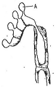
- 녹포자
- 담자포자
- 여름포자
- 자낭포자
(정답률: 65%)
28. 자기 나라에 없던 새로운 병원체가 다른 나라로부터 들어와 피해를 준 사례로, 1900년생 동양에서 미국으로 수입한 묘목에 묻어 들어간 병해로 밤나무에 크게 피해를 준 것은?
- 밤나무 잎떨림병
- 밤나무 눈마름병
- 밤나무 줄기마름병
- 밤나무 붉은마름병
(정답률: 78%)
29. 박쥐나방에 대한 설명으로 옳지 않은 것은?
- 어린 유충은 초본의 줄기 속을 식해한다.
- 성충은 박쥐처럼 저녁에 활발히 활동한다.
- 1년 또는 2년에 1회 발생하며 알로 월동한다.
- 성충은 나무에 구멍을 뚫어 알을 산란한다.
(정답률: 56%)
30. 만상(晩霜)의 피해에 대한 설명으로 옳은 것은?
- 가을에 이상 기온으로 조기에 잎이 변색되는 피해
- 이른 봄에 수목생장이 개시되기 전 치수가 고사하는 피해
- 이른 봄에 수목생장이 개시된 후 급격한 온도 저하로 어린 지엽이 입는 피해
- 늦가을에 식물생육이 완전히 휴면되기 전에 급격한 온도 저하고 오래된 지엽이 입는 피해
(정답률: 73%)
31. 1년에 1회 발생하며 현재 암컷만이 알려져 단성생식을 하는 해충으로 옳은 것은?
- 밤나무혹벌
- 넓적다리잎벌
- 노랑애나무좀
- 오리나무잎벌레
(정답률: 77%)
32. 살충효과를 조사하고자 한다. 대조구의 생충율이 98.3%이고, 약제 처리구의 생충율이 88.3%이었다면 처리구의 보정살충율은 몇%인가?
- 10.17%
- 10.56%
- 10.94%
- 11.33%
(정답률: 54%)
33. 파이토플라스마(phytoplasma)는 다음 중 어느 것에 감수성이 있는가?
- Benlate
- Tetracycline
- Penicillin
- Streptomycin
(정답률: 77%)
34. 수목의 뿌리혹병(crown gall) 세균이 침입하는 장소로 가장 거리가 먼 것은?
- 새순
- 삽목 하단부
- 뿌리의 절단면
- 지상부 접목부위
(정답률: 75%)
35. 야생동물의 분포도 작성을 위한 서식정보 수집방법에 해당되지 않는 것은?
- 지형조사
- 육안조사
- 포획조사
- 설문조사
(정답률: 64%)
36. 다음은 염풍(salt wind)에 의한 수목 피해 설명이다. ( )안에 들아갈 수치로 가장 적절한 것은?
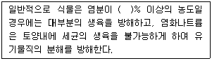
- 0.5
- 1.0
- 1.5
- 2.0
(정답률: 64%)
37. 난균류에 속하는 균들의 무성포자 형성기관에 해당하는 것은?
- 균핵
- 담자기
- 자낭자좌
- 유주포자낭
(정답률: 53%)
38. 다음 중 병환부에 표징이 가장 잘 나나타는 병은?
- 소나무 시들음병
- 오동나무 빗자루병
- 떡갈나무 흰가루병
- 포플러 모자이크병
(정답률: 69%)
39. 석회보르도액은 다음 중 어느 것에 해당되는가?
- 토양살균제
- 직접살균제
- 보호살균제
- 침투성살균제
(정답률: 75%)
40. 소나무좀에 대한 설명으로 옳지 않은 것은?
- 암컷 성충은 수피를 뚫고 갱도를 만들면서 가해한다.
- 1년에 1회 발생하지만 봄과 여름 두 번에 걸쳐 가해한다.
- 먹이나무를 설치하여 월동성충이 산란하게 한 후 소각한다.
- 주로 쇠약목, 이식목, 병해충 피해목에 기생하지만 벌채목에는 기생하지 않는다.
(정답률: 74%)
3과목: 임업경영학
41. 임령에 대한 연년생장량의 설명으로 옳은 것은?
- 벌기에 도달했을 때의 생장량
- 총생장량을 임령으로 나눈 양
- 일정한 기간 내에 평균적으로 생장한 양
- 임령이 1년 증가함에 따라 추가적으로 증가하는 수확량
(정답률: 73%)
42. 산림휴양림의 공간이용지역 관리에 관한 설명으로 옳지 않은 것은?
- 기계적 솎아베기 금지
- 덩굴제거는 필요한 경우 인력으로 제거
- 작업시기는 방문객이 적은 시기에 실시
- 가급적 목재생산림의 우량대경재에 준하여 관리
(정답률: 72%)
43. 벌기령과 벌채령에 대한 설명으로 옳지 않은 것은?
- 벌채령은 임목이 실제로 벌채되는 임령을 의미한다
- 벌기령과 벌채령이 일치할 때를 법정벌채령이라 한다.
- 대부분의 임분은 영림계획상의 벌기령과 벌채령이 일치한다.
- 벌기령은 임목이 성숙기에 도달하는 계획상의 연수를 의미한다
(정답률: 52%)
44. 산림경영의 지도원칙으로 옳지 않은 것은?
- 수익성의 원칙
- 공공성의 원칙
- 기회비용의 원칙
- 합자연성의 원칙
(정답률: 72%)
45. 현재 기준연도에서 벌채 예정 연도까지의 임목기망가식에 대한 설명으로 옳은 것은?
- 주벌 및 간벌수확 전가합계 - 지대 및 관리비 전가합계
- 주벌 및 간벌수확 후가합계 - 지대 및 관리비 후가합계
- 주벌 및 간벌수확 전가합계 - 지대 및 관리비 후가합계
- 주벌 및 간벌수확 후가합계 - 지대 및 관리비 전가합계
(정답률: 68%)
46. 다음은 매년말 r씩 n회 취득할 수 있는 이자의 전가합계를 구하는 식이다. A에 대한 설명으로 옳은 것은?
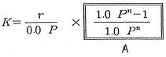
- 감채계수
- 연금후가계수
- 연금불현가계수
- 최대자본회수계수
(정답률: 47%)
47. 자연휴양림에 휴식년제를 실시할 경우 고시하는 사 항으로 옳지 않은 것은?
- 휴식년제 실시의 목적
- 휴식년제를 실시하는 자연휴양림의 명칭
- 대체 자연휴양림의 이용안내 및 위반에 따른 제재 사항
- 그 밖에 지방자치단체의 장 또는 국유림관리소장이 필요하다고 인정하는 사항
(정답률: 60%)
48. 산림관리협회(FSC)는 "산림관리에 관한 FSC의 원칙과 규준"을 기초로 하여 평가, 인정, 모니터링을 하고 있다. FSC의 원칙이 아닌 것은?
- 조림
- 원주민의 권리
- 지구의 탄소순환
- 지역사회와의 관계와 노동자의 권리
(정답률: 64%)
49. 벌기가 20년인 활엽수 맹아림의 임목가는 40만원이다. 마르티나이트(Martineit)식으로 계산한 15년생의 임목가는?
- 112,500원
- 150,000원
- 225,000원
- 300,000원
(정답률: 54%)
50. 손익분기점 분석을 위한 가정에 대한 설명으로 옳지 않은 것은?
- 제품의 생산능력을 변화한다.
- 제품 한 단위당 변동비는 항상 일정하다.
- 고정비는 생산량의 증감에 관계없이 항상 일정하다
- 제품의 판매가격은 판매량이 변동하여도 변화되지 않는다
(정답률: 72%)
51. 임업투자의 경제성 평가방법 중에서 순현재가치를 영(0)으로 하는 할인율로 평가하는 것은?
- 회수기간법
- 내부수익률법
- 순현재가치법
- 수익비용비법
(정답률: 57%)
52. Glaser식에 대한 설명으로 옳은 것은?
- 복리계산을 하기 때문에 복잡하다.
- 이율을 사용하므로 주관성이 개입된다.
- 비용가법과 기망가법의 중간적 방법이다.
- 벌기가 지난 임목의 가치 측정에 적당한 방법이다.
(정답률: 83%)
53. 어느 임업 법인체의 임목벌채권 취득원가가 8000만원이고, 잔촌가치는 3000만원이라고 한다. 총 벌채 예정량은 10만m3이고 당기 벌채량은 2000m3이라고 하면 당기 총 감가상각비는?
- 1,000,000원
- 2,000,000원
- 3,000,000원
- 4,000,000원
(정답률: 61%)
54. 자연휴양림의 입지조건을 수요와 공급 측면으로 구분할 때 수요측면에서의 자연휴양림 입지조건이 아닌 것은?
- 다수 국민이 쉽게 접근 또는 이용할 수 있는 지역의 산림지
- 해당 산림의 자연휴양림적 이용과 목재생산과의 합리적 조정을 도모할 수 있는 곳
- 배후 도시상황, 거주인주, 기존시설 등의 사회경제적 레크레이션(recreation)수요에 대응되는 곳
- 해당 산림 상태와 각종 시설과의 조화를 도모하면서 풍치적 시업을 하여 자연휴양적 이용이 가능한 지역
(정답률: 52%)
55. 재장이 4.2m이고 말구직경이 30cm인 국산재 원목의 재적을 말구직경자승법으로 계산하면? (단, 소수 셋째자리에서 반올림 할 것)
- 0.09m3
- 0.38m3
- 0.50m3
- 0.67m3
(정답률: 66%)
56. 보속작업에 있어서 하나의 작업금에 속하는 모든 임분을 일순벌 하는데 소요되는 기간은?
- 윤벌령
- 윤벌기
- 벌기령
- 벌채령
(정답률: 79%)
57. 임업경영의 총자본을 종사하는 사람의 수로 나눈 값으로 종사자 1인당 자본액을 의미하는 것은?
- 자본장비도
- 자본보유율
- 자본수익률
- 자본회수계수
(정답률: 74%)
58. 어떤 산림의 기말재적이 2,000,000m3이고 10년생의 생장 초기 재적이 500,000m3일 때 프레슬러(pressler)식에 의한 연년생장률은?
- 12%
- 15%
- 24%
- 30%
(정답률: 42%)
59. 생산물의 가격이 고정되어 있을 때 일정한 수입을 얻게되는 생산물의 조합을 무엇이라고 하는가?
- 확장경로
- 등수입곡선
- 등비용곡선
- 결합생산경로
(정답률: 76%)
60. 국가산림자원조사에서 적용되는 산림의 정의로 옳지 않은 것은?
- 취소 폭이 30m 이상
- 최소 면적 0.5ha 이상
- 산림으로 회복될 가능성이 있는 미립목지 또는 죽림도 포함
- 수고가 최소한 10m까지 자랄 수 있는 임목의 수관밀도 30%이상
(정답률: 53%)
4과목: 임도공학
61. 임도의 유지 및 보수에 대한 설명으로 옳지 않은 것은?
- 노체의 지지력이 약화되었을 경우 기층 및 표층의 재료를 교체하지 않는다.
- 노면 고르기는 노면이 건조한 상태보다 어느 정도 습윤한 상태에서 실시한다.
- 유토, 지조와 낙엽 등에 의하여 배수구의 유수단면적이 적어지므로 수시로 제거한다.
- 결빙된 노면은 마찰저항이 증대되는 모래, 부순돌, 석탄재, 염화칼슘 등을 뿌린다
(정답률: 84%)
62. 트래버스측량에 의한 면적 계산에서 사용되는 배횡거에 대한 설명으로 옳지 않은 것은?
- 횡거의 2배를 배횡거라 한다.
- 최초 측선의 배횡거는 그 측선의 위거와 같다.
- 마지막 측선의 배횡거는 그 측선의 경거와 같다.
- 임의의 측선의 배횡거는 앞 측선의 배횡거 및 경거와 그 측선의 대수합이다
(정답률: 54%)
63. 하베스터와 포워더를 이용한 작업시스템의 목재생산법은?
- 전목생산방법
- 전간생산방법
- 단목생산방법
- 전간목생산방법
(정답률: 70%)
64. 다음 그림과 같은 지형의 남쪽에서 북쪽을 향하여 임도를 설치하려 할 때 임도의 효율을 가장 높일 수 있는 통과지점으로 적합한 곳은?
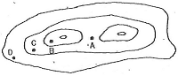
- A
- B
- C
- D
(정답률: 79%)
65. 굴삭기(유압식 백호우)의 시간당 작업량 산출공식에서 쓰이지 않은 것은?
- 작업효율
- 버킷계수
- 버킷면적
- 토량환산계수
(정답률: 62%)
66. 임도의 종단기울기 선정시 다음 표에 들어갈 수치는?
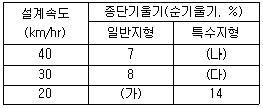
- 가 : 10, 나 : 12, 다 : 13
- 가 : 10, 나 : 10, 다 : 12
- 가 : 9, 나 : 12, 다 : 13
- 가 : 9, 나 : 10, 다 : 12
(정답률: 72%)
67. 임도개설시 흙을 다지는 목적과 관계가 가장 먼 것은?
- 압축성의 감소
- 지지력의 증대
- 흡수력의 감소
- 투수성의 증대
(정답률: 74%)
68. 평시에는 유량이 적지만 강우시에 유량이 급격히 증 가하는 지역 등과 같은 곳에 설치하는 것은?
- 세월교
- 속도랑
- 빗물받이
- 횡단배수관
(정답률: 71%)
69. 수평각 측정에서 폐합된 5각형의 외각의 합은 얼마 인가?
- 360°
- 540°
- 720°
- 1260°
(정답률: 51%)
70. 쇄석의 틈 사이에 석분을 물로 침투시켜 롤러로 다져진 도로는?
- 역청머캐덤도
- 수체머캐덤도
- 교통체머캐덤도
- 시멘트머캐덤도
(정답률: 84%)
71. 임도타당성평가 항목이 아닌 것은?
- 산림경영상 활용도
- 노선대상지의 식생
- 농산촌마을연결 활용도
- 멸종위기 동, 식물 서식지 유, 무
(정답률: 67%)
72. 산림관리기반시설의 설계 및 시설기준상의 "평면도" 작성시 표시하지 않아도 되는 것은?
- 교각점
- 곡선제원
- 지적선
- 구조물
(정답률: 38%)
73. 토공작업에 적합한 기계 연결로 옳지 않은 것은?
- 굴착 - 파워 쇼벨, 백호우
- 벌근제거 - 트랜져, 불도저
- 정지 - 불도저, 모터 그레이더
- 운반 - 덤프트럭, 벨트 컨베이어
(정답률: 66%)
74. 임도개설과 같이 폭이 좁고 길이가 상대적으로 긴 구간에서 발생되는 토량을 산출하기 위하여 사용되는 토적계산으로 적합하지 않은 것은?
- 주상체공식
- 중앙단면적법
- 양단면적평균법
- 직사각형기둥법
(정답률: 68%)
75. 평지림에 시설된 임도의 중앙점에서 양측 길섶(길어깨)으로 3%의 횡단경사를 주고자 한다. 임도폭이 4m일 경우 양측 길섶은 임도 중앙점보다 얼마가 낮아져야 하는가?
- 1cm
- 3cm
- 6cm
- 9cm
(정답률: 63%)
76. 임도의 비탈면 기울기를 나타내는 방법에 대한 설명으로 옳은 것은?
- 비탈어깨와 비탈밑 사이의 수직높이 1에 대하여 수평거리가 n일 때 1:n으로 표기한다.
- 비탈어깨와 기탈밑 사이의 수평거리 1에 대하여 수직높이가 n일 때 1:n으로 표기한다.
- 비탈어깨와 비탈밑 사이의 수평거리 100에 대하여 수직높이가 n일 때 1:n으로 표기한다.
- 비탈어깨와 비탈밑 사이의 수직높이 100에 대하여 수평거리가 n일 때 1:n으로 표기한다.
(정답률: 71%)
77. 롤로 표면에 돌기를 부착한 것으로 점착성이 큰 점성토 다짐에 적합하며 다짐 유효깊이가 큰 장비는?
- 탠덤롤러
- 탬핑롤러
- 타이어롤러
- 머캐덤롤러
(정답률: 81%)
78. 평판측량에서 구심(치심)에 허용되는 편심거리는 무엇에 의해서 결정되는가?
- 축적
- 측점의 수
- 지침의 길이
- 방샹선의 길이
(정답률: 55%)
79. 콤파스측량에서 시준선의 기준방향은?
- S.W
- E.W
- N.E
- N.S
(정답률: 73%)
80. 1:25,000 지형도상에서 산정표고 485.35m, 산밑표고 234.5m, 산정으로부터 산 밑까지의 도상 수평거리가 5cm일 때 사면의 경사는 약 얼마인가?
- 10%
- 15%
- 20%
- 25%
(정답률: 45%)
5과목: 사방공학
81. 바닥막이 공사에 관한 설명으로 옳지 않은 것은?
- 높이는 사방댐보다 낮게, 골막이보다 높게 설치한다.
- 방수로의 폭은 계천폭과 같게 하거나 다소 좁게한다.
- 연속적인 바닥막이 공사로 계상 기울기를 완화시킨다.
- 계상의 종침식을 방지하는 경우에는 낮은 바닥막이를 계획한다.
(정답률: 58%)
82. 산지사방공사의 단끊기에 대한 설명으로 옳지 않은 것은?
- 단끊기에 의한 절취토사의 이동은 최소로 한다
- 단끊기를 시공할 때는 하부로부터 상부로 시공한다.
- 단 간격의 수직높이는 비탈의 경사에 따라 다르게 한다.
- 비탈의 경사가 급할 때에는 단의 너비를 좁게 하여 상, 하단간의 비탈경사가 완만하게 한다.
(정답률: 77%)
83. 사방사업에서 주로 사용되는 평균유속의 산정식이 아닌 것은?(단, V : 유속, C : 유속계수, R : 경심, I : 수로 기울기, α, β, n : 조도계수)
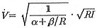
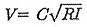
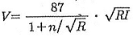
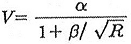
(정답률: 53%)
84. 사방사업이 필요한 지역의 유형분류에서 황폐지에 해당되지 않는 것은?
- 민둥산
- 밀린 땅
- 임간나지
- 척악임지
(정답률: 79%)
85. 비탈면에 콘크리트 블록을 조립하여 그 안에 작은 돌이나 흙으로 채우고 녹화하는 공법은?
- 비탈 힘줄박기
- 비탈 격자틀 붙이기
- 비탈 콘크리트 블록쌓기
- 비탈 콘크리트 뿜어붙이기
(정답률: 60%)
86. 직접적으로 계상을 종침식을 방지하는 계간사방 공작물이 아닌 것은?
- 사방댐
- 골막이
- 바닥막이
- 기슭막이
(정답률: 60%)
87. 콘크리트 비빔 시에 결합시기를 촉진하고 동절기 콘크리트 공사 수행을 위하여 사용하는 혼화재료는?
- 점토
- 인산염
- 염화칼슘
- 플라이 애쉬
(정답률: 75%)
88. 식재목의 생육환경 조성을 위하여 후방에 풍속을 약화시키고 모래의 이동을 막는 목적으로 시공하는 것은?
- 모래덮기
- 퇴사울세우기
- 사지식수공법
- 정사울세우기
(정답률: 72%)
89. 내음성, 내한성이 커서 한랭지에 혼파하기 좋은 사면녹화용 도입초본은?
- 능수귀염풀(weeping love grass)
- 우산잔디(bermuda grass)
- 오리새(orchard grass)
- 큰조아재비(timothy)
(정답률: 59%)
90. 중력식 사방댐의 제체의 자중(G) 및 모든 외력 P의 합력(R)의 작용선은 제체의 하류 끝에서 중앙까지를 지난다고 볼 때, 전도에 대해서 안전하려면 어느 위치를 지나야 하는가?
- 제저 중앙의 1/5이내
- 제저 중앙의 1/4이내
- 제저 중앙의 1/3이내
- 제저 중앙의 1/2이내
(정답률: 73%)
91. 비탈면 돌쌓기 공종 중 메쌓기의 표준 기울기로 옿은 것은?
- 1 : 0.1
- 1 : 0.2
- 1 : 0.3
- 1 : 0.4
(정답률: 76%)
92. 산비탈수로의 집수면적이 3.6ha, 유거계수(K)가 1.0이고 최대시우량이 500mm/h이면 수로의 설계유량(m3/s)은?
- 1.0
- 5.0
- 10.0
- 15.0
(정답률: 65%)
93. 사면혼파공법의 일반적인 시공요령으로 옳지 않은 것은?
- 부토사는 하부에 흙막이 공작물을 시공하여 처리한다.
- 비탈면에서는 수평으로 작은 골을 파서 종자 유실을 방지한다
- 비탈다듬기 공사를 하고 견지반을 노출시키지 않도록 한다.
- 비탈면에는 수직높이 60cm 정도, 나비 20 ~ 30cm의 수평계단을 설치한다.
(정답률: 45%)
94. 계류의 바닥 폭이 5m, 양안의 경사각이 모두 45°이고 높이가 1.2m일 때의 횡단면적(m2)은?(문제 오류로 실제 시험에서는 1, 3번이 정답 처리 되었습니다. 여기서는 1번을 누르면 정답 처리 됩니다.)
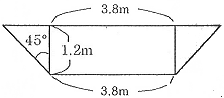
- 6.0
- 6.8
- 7.4
- 8.0
(정답률: 71%)
95. 폐탄광지의 복구녹화에 대한 설명으로 옪지 않은 것은?
- 경제림을 단기적으로 조성한다.
- 차폐식재하여 좋은 경관을 만든다
- 폐석탄 등을 제거하고 복토하여 식재한다.
- 사면붕괴 방지를 위해 사면 안정각을 유지한다.
(정답률: 81%)
96. 중력식 콘크리트 사방댐의 구조에 포함되지 않는 것은?
- 물받이
- 양수장
- 방수로
- 댐둑어깨
(정답률: 75%)
97. 선떼붙이기 공법은 수평계단 1m당 떼의 사용매수에 따라 1급에서 9급까지로 구분하는데 이때 1등급 증가할때마다 떼의 사용매수는 얼마씩 차이가 나는가? (단, 떼의 크기는 길이 40cm, 나비는 25cm 이다)
- 1급에 1.25매씩 감소
- 1급에 2.50매씩 증가
- 1급에 1.25매씩 증가
- 1급에 1.50매씩 감소
(정답률: 71%)
98. 발생기대본수가 3,000본/m2, 평균입도 1000립/g인 종자가 순량율이 50%, 발아율이 80%라면 1ha의 면적을 파종하기 위해 구입해야 할 종자량은?(오류 신고가 접수된 문제입니다. 반드시 정답과 해설을 확인하시기 바랍니다.)
- 55kg
- 75kg
- 550kg
- 750kg
(정답률: 51%)
99. 평균유속을 구하는 매닝공식 에서 n은 무엇인가?
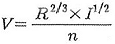
- 조도계수
- 유출계수
- 점성계수
- 마찰계수
(정답률: 68%)
100. 누구침식이 점점 더 진행되어 그 규모가 커져서 보다 깊고 넓은 골을 형성하는 왕성한 침식형태는?
- 하천침식
- 우격침식
- 면상침식
- 구곡침식
(정답률: 83%)